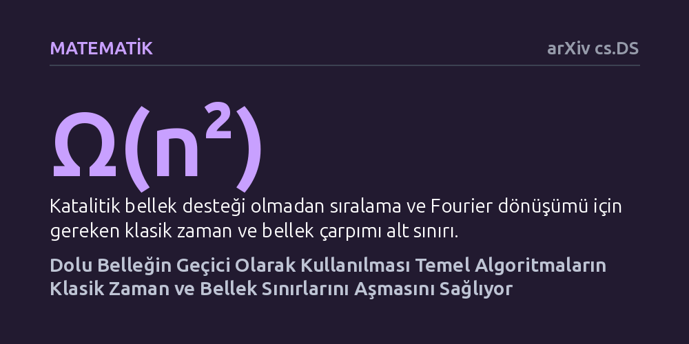

MATEMATIK · arXiv cs.DS · 2026-10-21
Araştırmacılar, halihazırda dolu olan ve işlem sonunda eski haline döndürülen 'katalitik' belleğin hesaplamaları hızlandırıp hızlandırmayacağını inceledi. Matematiksel kanıtlar; sıralama, Fourier dönüşümü ve matris çarpımı gibi temel algoritmaların bu dolu belleği ödünç alarak klasik zaman-bellek sınırlarını aşabildiğini gösterdi.
Dolu bir belleğin atıl kalmak zorunda olmadığını, aksine içindeki veriler bozulmadan geçici olarak ödünç alınarak temel işlemlerin çok daha hızlı tamamlanabileceğini gösteriyor.

Bilgisayar biliminde uzun yıllardır kabul gören temel bir kural vardır: Bir algoritmanın hızlı çalışabilmesi için yeterli boş çalışma belleğine ihtiyacı vardır. Eğer cihazın belleği başka verilerle tamamen doluysa yeni bir hesaplama yapmak imkânsız görünür ya da sistem ciddi biçimde yavaşlar. Karmaşıklık teorisinde de benzer şekilde, bellek kısıtlı olduğunda verileri sıralama veya matris çarpımı gibi temel işlemlerin belirli bir hız sınırını aşamayacağı matematiksel alt sınırlarla gösterilmişti.
Ancak kuramsal bilgisayar bilimciler son yıllarda alışılmadık bir yaklaşımı araştırmaya başladı: "Katalitik bellek". Kimyadaki katalizörlerin kimyasal tepkimeye girip süreç sonunda hiçbir değişikliğe uğramadan çıkması gibi, dolu bir belleğin geçici bir karalama tahtası olarak kullanılıp hesaplama bittiğinde ilk haline döndürülmesi hedefleniyor. Bu çalışma, halihazırda dolu olan bir belleğin içindeki verilere zarar vermeden algoritmalara kanıtlanabilir bir hız kazandırıp kazandıramayacağı sorusuna odaklanıyor.
Araştırmacılar bu soruyu yanıtlamak için laboratuvar deneyleri veya fiziksel donanım testleri yerine tamamen teorik bilgisayar bilimi ve matematiksel algoritma analizi yöntemini kullandı. Bilgisayar bilimi modellerinde, işlemcinin yalnızca girdinin boyutuna kıyasla çok küçük bir serbest belleğe (logaritmik alan) ve girdi boyutunun polinom katı büyüklükte dolu bir katalitik belleğe sahip olduğu doğal bir çıktı modeli kurgulandı.
Bu kuramsal senaryoda algoritma, katalitik bellekteki bit dizilerini ara işlemler için serbestçe değiştirebiliyor; ancak en kritik kural, işlem bittiğinde bu belleğin tek bir biti dahi bozulmadan tamamen orijinal haline getirilmesi zorunluluğudur. Yazarlar bu kısıt altında sıralama, ayrık Fourier dönüşümü ve matris çarpımı gibi temel problemleri inceleyerek algoritmaların adım sayılarını titizlikle ispatladı.
Çalışmanın sunduğu en temel matematiksel bulgu, dolu belleğin geçici olarak kullanılmasının klasik alt sınırları kesin biçimde aşabilmesidir. Standart modellerde ek katalitik alan olmadan sıralama ve Fourier dönüşümü yapabilmek için gereken zaman ile bellek miktarının çarpımının en az n'nin karesi düzeyinde olması gerektiği kırk yılı aşkın süredir biliniyordu. Benzer şekilde matris çarpımı için bu çarpımın en az n'nin küpü düzeyinde olması gerekiyordu.
Yazarlar, dolu katalitik bellek desteğiyle sıralama ve ayrık Fourier dönüşümünün neredeyse doğrusal zamanda tamamlanabileceğini kanıtladı. Matris çarpımının ise bilinen en hızlı kuramsal çalışma süresine indirilebileceği gösterildi. Bu sonuç, katalitik algoritmaların standart logaritmik bellek algoritmalarından koşulsuz olarak daha hızlı çalışabileceğini ortaya koyan ilk teorik kanıt oldu. Ayrıca çalışma; tamsayı çarpımı ve eşik devrelerinin hesaplanması gibi birçok farklı problemin de bu yöntemle hızlandırılabileceğini belirledi.
Elde edilen sonuçlar, bilgisayar bilimcilerin hesaplama karmaşıklığına ve "kullanılabilir kaynak" kavramına bakışını kuramsal düzeyde yeniden şekillendiriyor. Bugüne kadar dolu bellek tamamen atıl veya hesaplamaya engel bir kısıt olarak görülürken, bu çalışma dolu belleğin bile tersine çevrilebilir adımlarla bir çalışma alanı gibi değerlendirilebileceğini gösteriyor.
Bununla birlikte çalışmanın tamamen kuramsal bir çerçevede kaldığını göz önünde bulundurmak gerekir. Geliştirilen algoritmalar henüz günlük işletim sistemlerinde veya tüketici yazılımlarında doğrudan çalıştırılabilecek pratik kodlar değildir. Ancak kuramsal düzeyde açılan bu kapı, gelecekte bellek kısıtı yaşayan donanımlarda kaynak yönetimi ve algoritma tasarımı ilkelerinin nasıl geliştirilebileceğine dair güçlü bir matematiksel temel sunmaktadır.